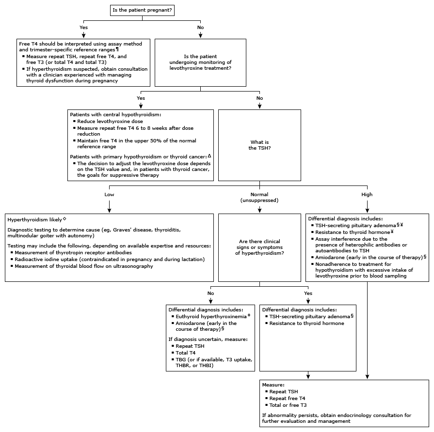

T3: triiodothyronine; T4: thyroxine; TBG: thyroid-binding globulin; THBR: thyroid hormone-binding ratio, also called thyroid hormone-binding index (THBI); TSH: thyroid-stimulating hormone.
* The normal range for free T4 is approximately 0.8 to 1.8 ng/dL (10.3 to 23.2 pmol/L). The normal range is shifted slightly to higher values in patients taking levothyroxine. Interpretation of a specific abnormal test result should be based upon the reference range reported with that result. Free T4 is usually measured to evaluate thyroid disease in patients already determined to have an abnormal TSH.
¶ Diagnosis of true hyperthyroidism during pregnancy may be difficult because of the changes in thyroid function that occur during normal pregnancy. Overt hyperthyroidism during pregnancy is characterized by suppressed (<0.1 mU/L) or undetectable (<0.01 mU/L) serum TSH value and a free T4 and/or free T3 (or total T4 and/or total T3) measurement that exceeds the normal range for pregnancy. Refer to UpToDate content on thyroid disease in pregnancy for additional information.
Δ Free T4 is not usually required for the monitoring of levothyroxine therapy in patients with primary hypothyroidism or thyroid cancer. If TSH is well below normal (eg, <0.05 mU/L), free T4 is measured to determine whether treatment may be excessive.
◊ Ingestion of biotin (5 to 10 mg) can cause spurious results in free T4 and TSH, suggesting a diagnosis of hyperthyroidism. Discontinue biotin and repeat thyroid tests 2 days after discontinuation.
§ TSH may be high or inappropriately normal.
¥ Clinical signs and symptoms of hyperthyroidism may be present.
‡ Euthyroid hyperthyroxinemia may occur with one of several abnormalities in serum thyroid hormone-binding proteins. Typically, free T4 is normal; however, it may occasionally be spuriously elevated, depending on the free T4 assay. Other findings include high total T4, normal TSH, and low T3 uptake or THBR.